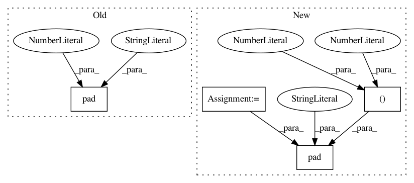

1a010ccffb1c80997260b9fe7cf3b7a3887b13ae,autokeras/net_combinator.py,,pad_filter,#Any#Any#Any#,36
Before Change
def pad_filter(weight, old_size, new_size):
return np.pad(weight,
map(lambda x: (x, x), tuple(np.subtract(np.array(new_size), np.array(old_size)) / 2)),
"constant",
constant_values=0)
def combine_conv_weights(layer1, layer2, filter_size, n_input_channel):
weight1, bias1 = layer1.get_weights()
After Change
def pad_filter(weight, old_size, new_size):
pad_width = tuple(map(lambda x: (int(x), int(x)), np.subtract(np.array(new_size), np.array(old_size)) / 2))
pad_width += ((0, 0), (0, 0))
return np.pad(weight,
pad_width,
"constant",
constant_values=0)
def combine_conv_weights(layer1, layer2, filter_size, n_input_channel):
weight1, bias1 = layer1.get_weights()
In pattern: SUPERPATTERN
Frequency: 3
Non-data size: 4
Instances
Project Name: jhfjhfj1/autokeras
Commit Name: 1a010ccffb1c80997260b9fe7cf3b7a3887b13ae
Time: 2017-12-19
Author: jhfjhfj1@gmail.com
File Name: autokeras/net_combinator.py
Class Name:
Method Name: pad_filter
Project Name: kevinzakka/recurrent-visual-attention
Commit Name: 520e8fb57b890a7249334d9e90c9ad209d0b849f
Time: 2018-02-10
Author: kevinarmandzakka@gmail.com
File Name: modules.py
Class Name: retina
Method Name: extract_patch